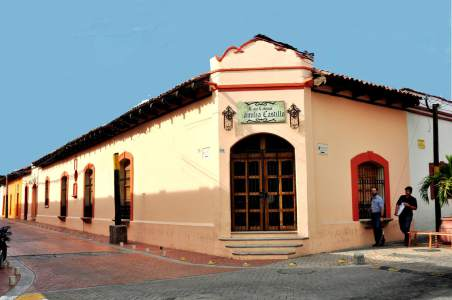
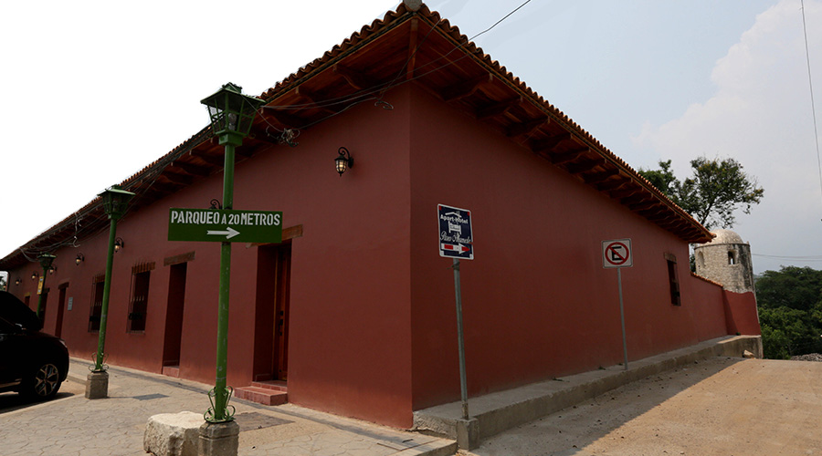
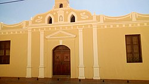
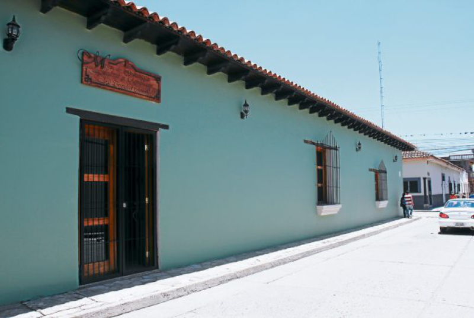
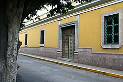
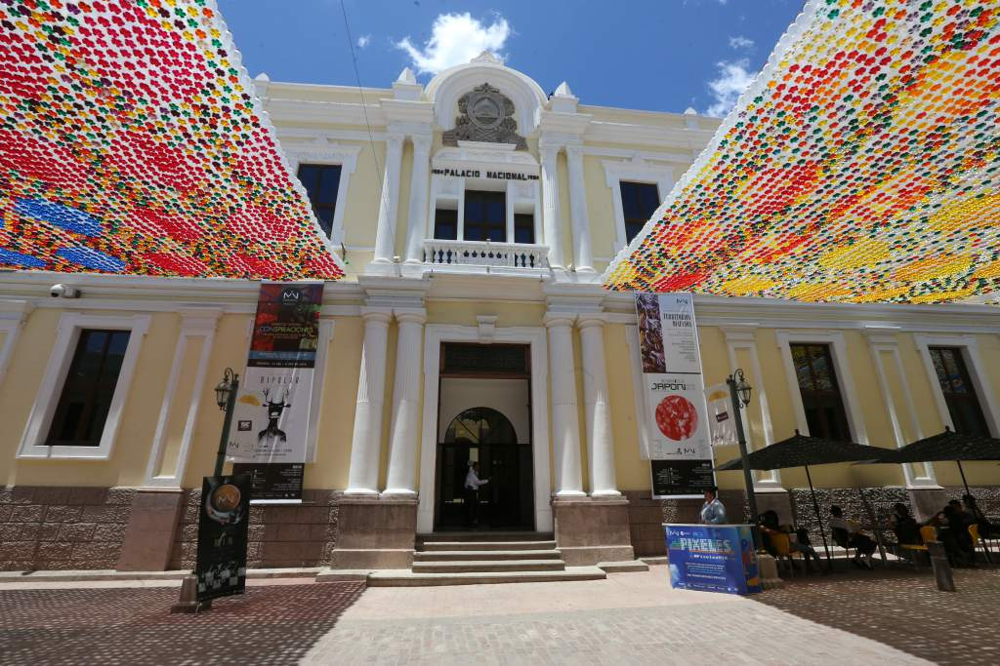
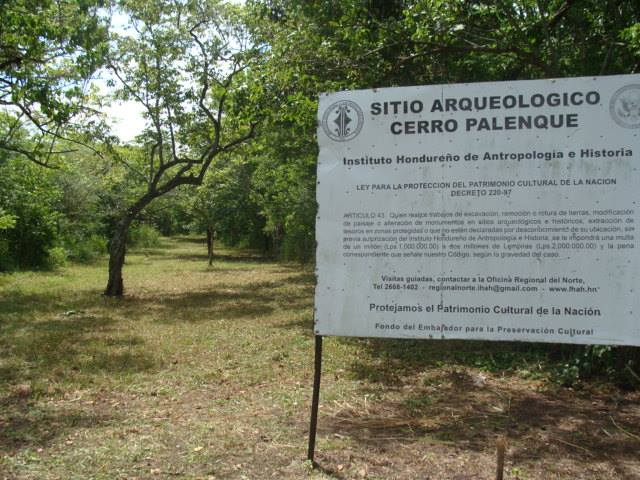
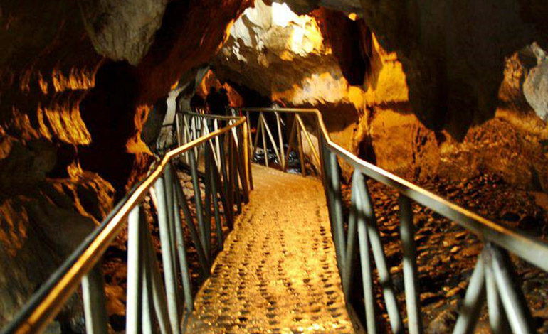
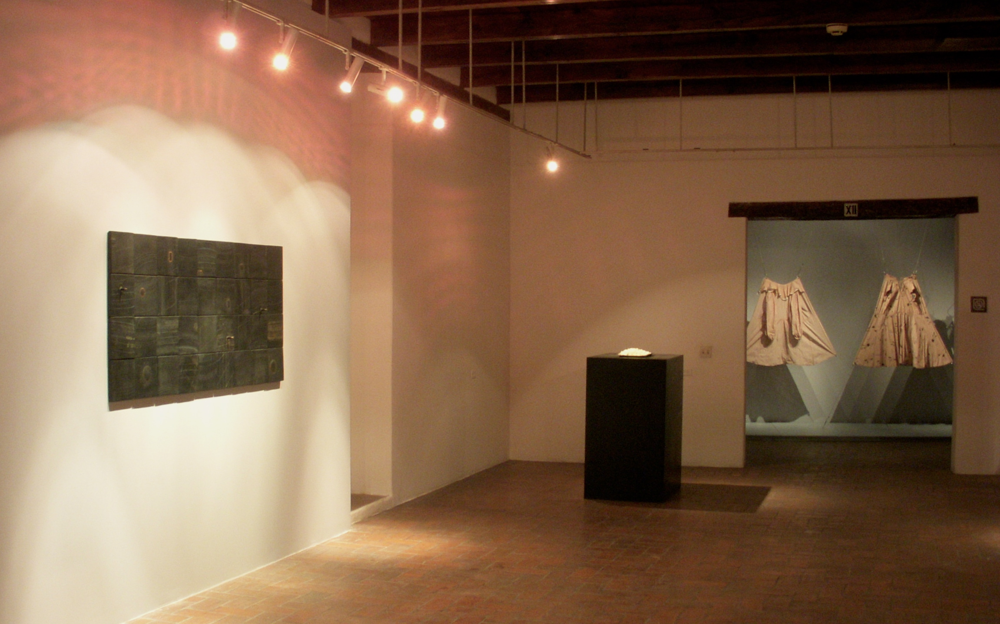

|
INICIO |
HISTORIA |
ARTES VISUALES |
LITERATURA |
MUSEOS |
CONTACTO |
ARTE Y CULTURA EN HONDURAS |
Museos en Comayagua |
_____________________________________________________________________________________________________________________________________ |
Museo Casa Colonial Familia Castillo
|
El Museo Casa Colonial Familia Castillo es un museo de historia en Comayagua sobre la historia, sociedad y vida de la época colonial hondureña de Nueva España. El museo se enfoca en la historia local y nacional con objetos y documentos del descubrimiento de América, la conquista y la colonización de Honduras. El museo también engloba el Centro de Investigaciones Históricas, un archivo público de historia local. |
 |
Museo Casa José Santos Guardiola
|
El Museo Casa José Santos Guardiola es un museo en Comayagua enfocado en la vida del quinto presidente hondureño José Santos Guardiola Bustillo y la historia de la Policía Nacional de Honduras. El museo está ubicado en la casa histórica de José Santos Guardiola Bustillo que data de finales del siglo XVIII durante la época colonial de Nueva España. Fue allí donde el presidente Santos Guardiola fue asesinado y es el único magnicidio registrado en Honduras. |
 |
Museo Colonial de Arte Religioso
|
El Museo Colonial de Arte Religioso es un museo en Comayagua dedicado a la conservación de arte religioso e historia de la época colonial española de Honduras. Es el único museo de arte religioso en Honduras.
El museo cuenta con una colección de arte histórica colonial incluyendo pinturas, esculturas, vestiduras y también de artefactos históricos de gran valor como el acta de matrimonio de Francisco Morazán. |
 |
Museo Histórico y Cívico Casa Cabañas
|
El Museo Histórico y Cívico Casa Cabañas es un museo de historia en Comayagua enfocado en las vidas de varios presidentes ilustres de Honduras. El museo está ubicado en la casa histórica de José Trinidad Cabañas Fiallos que data del siglo XVIII.
El museo tiene tres salas de exposición. La primera sala narra la vida de Dionisio de Herrera, primer presidente de Honduras; la segunda sala explica la vida del general José Trinidad Cabañas Fiallos, séptimo presidente de Honduras; y la tercera sala narra la vida de los más recientes presidentes hondureños desde 1880 como Ricardo Maduro, el 32° presidente hasta Porfirio Lobo Sosa el 34° presidente de Honduras |
 |
Museos en San Pedro Sula |
__________________________________________________________________________________________________________________________________ |
Museo de Antropología e Historia
|
El Museo de Antropología e Historia se localiza en San Pedro Sula y fue inaugurado en 1994, cuenta con veintiséis salas temáticas, entre las que sobresale la de agricultura, animales en riesgo de extinción y una plataforma submarina y la sala precolombina. Debido al escaso apoyo a los sectores de Cultura en Honduras en 2013 estuvo cerca de cerrar sus puertas. |
 |
Museos en Tegucigalpa |
__________________________________________________________________________________________________________________________________ |
Biblioteca Nacional Juan Ramón Molina
|
La Biblioteca Nacional de Honduras es una biblioteca que contiene más de cuarenta mil volúmenes. Fue fundada en Tegucigalpa, el 27 de agosto de 1880 en la administración de Marco Aurelio Soto, mediante acuerdo del 11 de febrero, con un presupuesto asignado de mil pesos. |
 |
Museo para la Identidad Nacional
|
El Museo para la Identidad Nacional de Honduras, es un museo dedicado a la adquisición, investigación, conservación y divulgación de material histórico de los humanos que han poblado el territorio de Honduras. Fue inaugurado en 2006 y se encuentra ubicado en la ciudad de Tegucigalpa, M.D.C. Cuenta con cuatro salas de exhibiciones permanentes y varias salas de exhibiciones temporales. |
 |
El Cerro Palenque es un sitio arqueológico que se encuentra en el departamento de Cortés en Honduras. La ciudad fue fundada en el Clásico Tardío (500-800 DC).
El sitio hoy se encuentra en la cima de la colina conocida como Cerro Palenque (232 metros sobre el nivel del mar), sobre la ciudad de Santiago, cerca de la confluencia de los ríos Ulua, Humuya (Comayagua) y Blanco, y en varias colinas al norte . Se encuentra a unos 40 kilómetros de la ciudad de San Pedro Sula en el valle de Sula Honduras. |
 |
Copán es un sitio arqueológico de la antigua civilización maya ubicado en el departamento de Copán al occidente de Honduras, a poca distancia de la frontera con Guatemala. Está ubicada entre colinas en un valle fértil a una altitud de 700 msnm.Las ruinas del núcleo del sitio se encuentran a 1,6 km de la aldea moderna de Copán Ruinas, que fue construida sobre los escombros de un importante complejo maya que data del periodo Clásico |
 |
Sitio Arqueologico Cuevas de Talgua
|
Cuevas de Talgua es el nombre que recibe una cueva situada en el valle de Olancho, en el municipio de Catacamas, al noreste del país centroamericano de Honduras. Es a veces conocida como "La Cueva de las Calaveras brillantes" debido a la forma en que la luz se refleja de los depósitos de calcita que se encuentran en los restos óseos depositados allí. El sitio ha ganado el interés de los arqueólogos que estudian los entierros en cuevas de Centroamérica y de Mesoamérica como uno de los principios más amplios de las Preclásico medio (1000-900 antes de cristo). |
 |
Galeria Nacional de Arte |
La Galería Nacional de Arte de Honduras es un museo en el que se almacenan, preservan y muestran diferentes creaciones artistícas realizadas en el territorio de la actual Honduras, donde se muestran obras de arte rupestre, escultura y cerámica precolombina, escultura contemporánea.
La Galería Nacional de Arte fue inaugurada el 31 de julio de 1996 por la Fundación Pro Arte y Cultura (Fundarte) y es depositaria del patrimonio artístico nacional, teniendo por objetivo el fortalecimiento de la identidad nacional y la construcción de ciudadanía a través de la revalorización de lo patrimonial - artístico.
El inmueble de estilo colonial, ubicado en el centro de Tegucigalpa, fue originalmente el Convento de Nuestra Señora de La Merced, construido en 1654. Luego en 1857 sirvió para la primera universidad del país y permaneció en él hasta 1968. Sus interesantes salas son recorridas diariamente por numerosas personas, especialmente por estudiantes de diferentes centros educativos del país, quienes se muestran impresionados con las colecciones exhibidas en ellas. |
 |
______________________________________________________________________________________________________________________________________________________________________
 bellasarteshn
bellasarteshn Escuela Nacional de Bellas Artes
Escuela Nacional de Bellas Artes